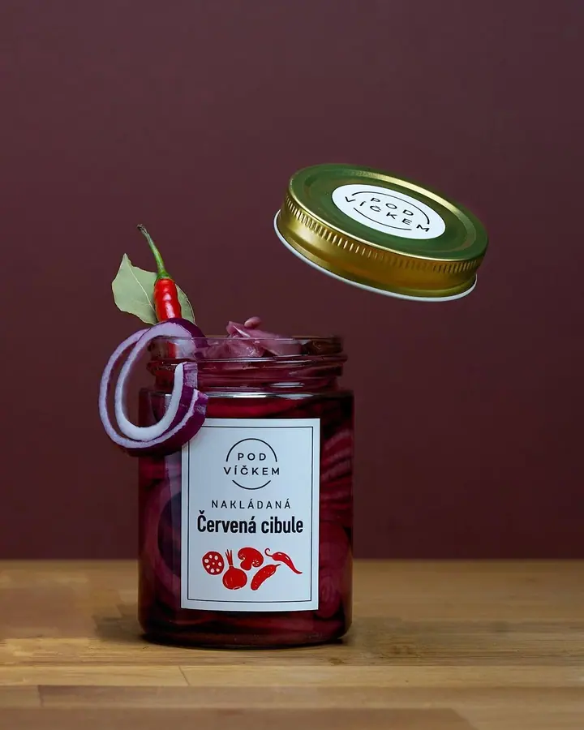
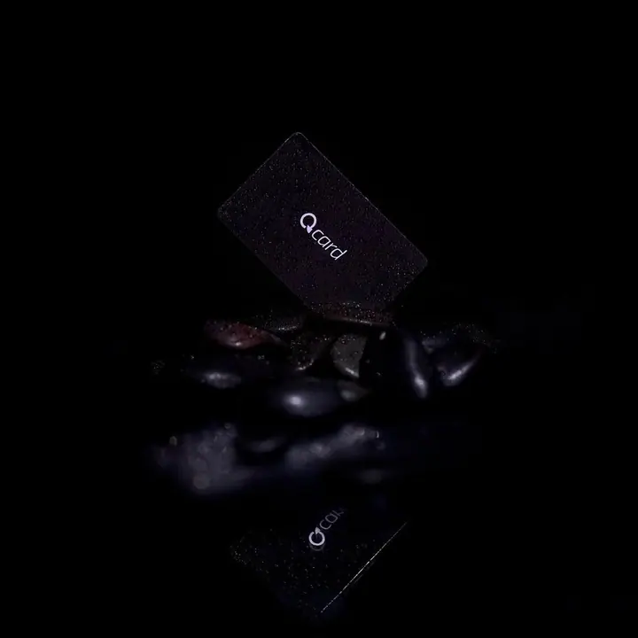
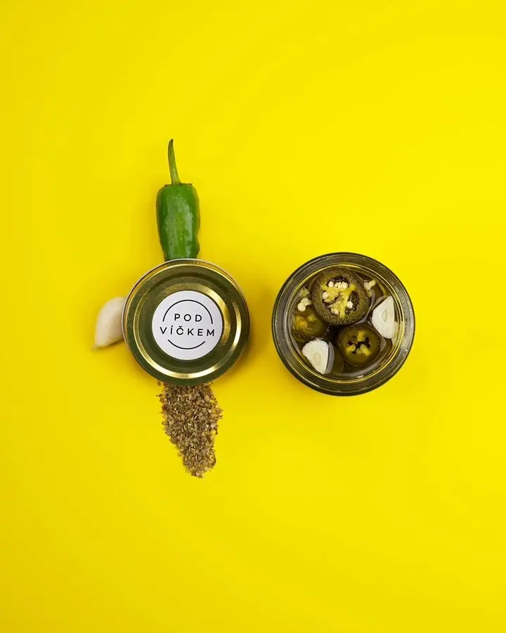
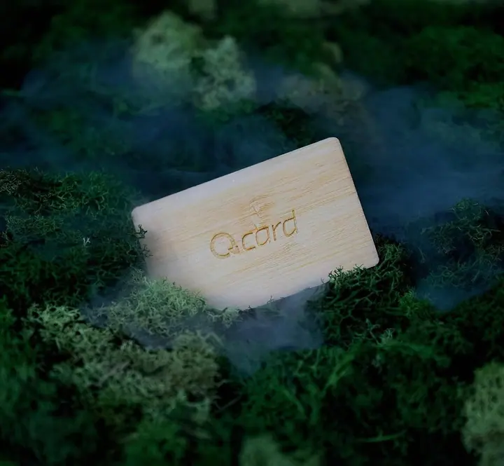
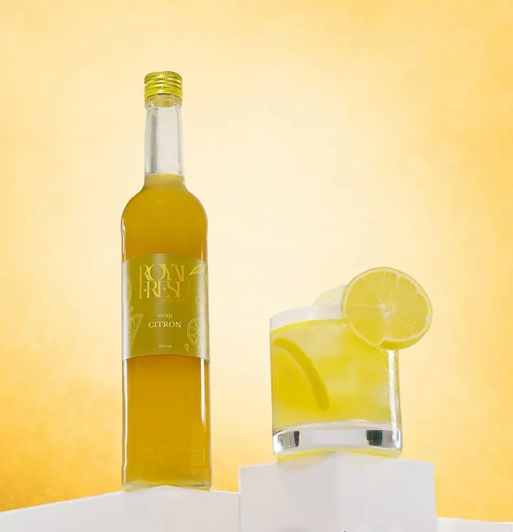
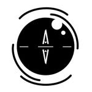

01 / 03
Produktové fotky pro e-shopy
Čisté fotky produktů na bílém pozadí, připravené rovnou do internetového obchodu. Pomáhají zákazníkovi vidět, co kupuje, a vám podpořit prodej.
Zeptat se na termín→




Fotky a videa, které prodávají
Zeptat se na termín →(01) Ahoj
Jmenuji se Andriy Shelengovskyy a pod značkou AndrewArt fotím a natáčím produkty pro internetové obchody. Někdy pro ně postavím barevnou scénu s rekvizitami , jindy je čistě nasvítím na bílém pozadí . Točím také krátká makro videa, která ukážou detail.
60příspěvků s fotkami a příběhy
(02) Co dělám
01 / 03
Čisté fotky produktů na bílém pozadí, připravené rovnou do internetového obchodu. Pomáhají zákazníkovi vidět, co kupuje, a vám podpořit prodej.
Zeptat se na termín→02 / 03
Produkt postavím do barevné nebo atmosférické scény se světlem a rekvizitami. Takové fotky se hodí na web, do kampaní i na sociální sítě.
Zeptat se na termín→Dále nabízím
Natáčím krátká makro videa, která ukážou detail, materiál a pohyb produktu. Jsou vhodná pro e-shop, reklamu i Instagram.
↗(04) Postup
Od první zprávy po hotovou galerii.
Krok 1 z 4
Napíšete mi, jaký produkt máte a kde se budou fotky nebo videa používat. Podle toho navrhnu, jaký typ záběrů dává smysl.
Krok 2 z 4
Vybereme pozadí, barvy a rekvizity. U fotek pro e-shop zvolíme čisté bílé pozadí, u kampaní výraznější scénu.
Krok 3 z 4
Produkt nasvítím a nafotím, případně natočím krátká makro videa s detaily.
Krok 4 z 4
Fotky a videa upravím a předám ve formátu, který potřebujete pro web, e-shop nebo sociální sítě.
Dobrá fotka ukáže produkt, jak si zaslouží.
(05) Za objektivem
Pomáhám internetovým obchodům podpořit prodej jejich produktů prostřednictvím fotografií a videí. Vím, že zákazník na e-shopu nemůže výrobek vzít do ruky, a tak mu ho musí ukázat fotka.
Fotím sirupy, nakládanou zeleninu, karty, kuchyňské doplňky i drobné technické věci. Každému produktu hledám pozadí, barvy a světlo, které mu sednou. Jednou to je sytě žlutá, jindy mech s mlhou nebo tmavé dřevo se solí.
Kromě fotek natáčím krátká makro videa. Na mém webu najdete foto, produkci i show reel, ať si uděláte představu, jak pracuji.

Andriy
Andriy Shelengovskyy · Produktový fotograf a kameraman
Ano, čisté fotky na bílém pozadí patří k tomu, co dělám nejčastěji. Hodí se přímo do produktových karet.
Ano, natáčím krátká makro videa produktů. Ukážou detail, materiál nebo pohyb, který na fotce není vidět.
Ano. Navrhnu pozadí, barvy a rekvizity podle charakteru produktu a značky, ať fotka zaujme i v kampani nebo na Instagramu.
Cena záleží na počtu produktů, typu záběrů a na tom, jestli chcete i video. Napište mi, co potřebujete, a pošlu vám nabídku.
(07) Kontakt
Napište pár vět o tom, co si představujete, a termín, který se vám hodí.
production@andrew-art.com